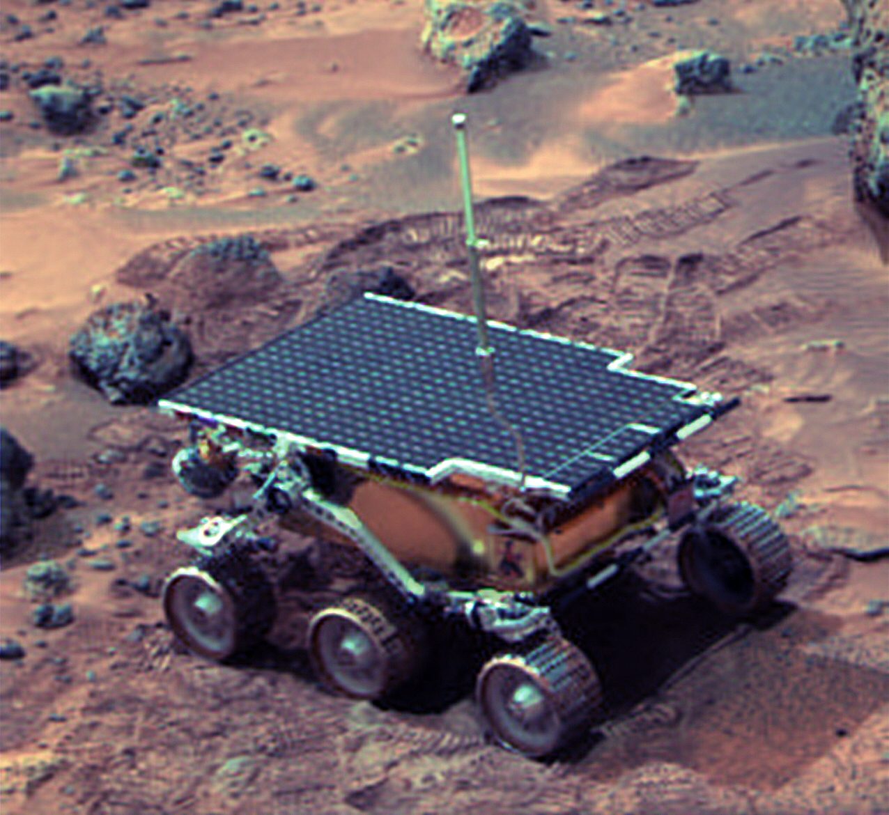

Sojourner

Mission Goals
The Sojourner rover, part of NASA’s Mars Pathfinder mission in 1997, was designed primarily as a technology demonstration to prove that a small, low-cost rover could successfully operate on the surface of Mars. Its mission goals included testing mobility on the Martian terrain, analyzing rocks and soil to better understand the planet’s geology and composition, and validating key technologies such as autonomous navigation and communication with a lander. By conducting experiments like measuring the chemical makeup of rocks and observing surface conditions, Sojourner helped scientists gain insights into Mars’s past environment while paving the way for more advanced rovers in future missions.
Launch and Landing
- Rocket: Delta II 7925 D240
- Launch Date: December 4, 1996, 06:58:07 UTC
- Launch Site: Cape Canaveral LC-17B
- Landing Date: July 4, 1997 16:56:55 UTC
- Landing Site: Ares Vallis, Chryse Planitia
Discoveries and Accomplishments
The Sojourner mission achieved several important discoveries and accomplishments despite its short duration. It successfully demonstrated that a small rover could navigate the Martian surface, using an autonomous hazard-avoidance system to move safely across rocky terrain. Scientifically, Sojourner analyzed the chemical composition of Martian rocks and soil with its Alpha Proton X-ray Spectrometer, revealing that some rocks had compositions similar to basalt on Earth, suggesting a history of volcanic activity. It also provided evidence that Mars once had a warmer and wetter environment, based on the characteristics of the soil and rounded pebbles observed at the landing site. Beyond its scientific findings, the mission proved the feasibility of low-cost planetary exploration and transmitted thousands of images and data points, laying the groundwork for future, more advanced Mars rovers.